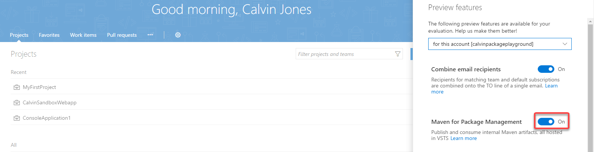

分享如何透過 TFS 建立 Private Maven regisry 並將程式碼封裝後發佈給其他應用程式使用

TFS 與 VSTS 已經從 May 2017 開始支援 Maven 套件管理了，這讓使用 Java 與 Android 開發的朋友也能透過 TFS/VSTS 統一完成它們的 CI/CD 流程。
以下範例使用 TFS Version 15.117.26714.0
Create Remote Maven Package Feed
由於目前 Maven Packagemenet Management 還是屬於預覽試用的狀態，所以我們要先到下面位置將該功能打開:
打開後就可以在 Feed 的地方看到 Maven 的頁籤:
而我們可以在登入時產生連線 token:
Setup Local Environment
首先開發 java 一定要先把開發環境安裝好，這邊請參考 安裝Java與安裝Maven
成功執行後Maven會自動從網路下載必須的檔案到Local的repository
所謂的repository指的是Maven存放套件資源的地方.
而 Maven 預設位置則會在你的 C:\Users\
若我們本機(local)電腦中沒有這些套件, Maven會自動從預設的網路位置下載放到我們本機的repository中, 之後所有Maven專案需要用到的套件, Maven都會先找本機的repository,找不到再到網路上去找:
而該目錄底下的 settings.xml 則是我們要修改遠端 Maven Repository 的地方:
1 | <?xml version="1.0" encoding="UTF-8"?> |
其中上面的 token 則是在 TFS/VSTS 產生的。
Create Maven Library
- groupId
- artifactId
- version
以上三者是一個 package 必要的三個屬性，而當我們安裝好 maven 後可以透過指令幫我們將 packge 的樣板產生出來:
mvn archetype:generate -DgroupId=com.myMaven.app -DartifactId=HelloMaven -DarchetypeArtifactId=maven-archetype-quickstart -DinteractiveMode=false
除了 groupId 和 artifactId 是我們創建套件的資訊 ，而 archetypeArtifactId 是指我們創建套件使用的模版(建那一種專案)。
而建立好的資料夾會向下圖的結構:
其中的 pom.xml 則是我們要修改遠端 Maven Repository 的地方:
1 | <project xmlns="http://maven.apache.org/POM/4.0.0" xmlns:xsi="http://www.w3.org/2001/XMLSchema-instance" |
Publish Package to TFS
在上傳到遠端的 TFS 或 VSTS Maven repository 時，可以透過 url 確認當前的 repository 是否正常:
上圖為正常的，下圖則為異常狀態。
而當我們環境設定與遠端狀態都確認好就可以在當前 package 資料夾內透過下方指令部屬 package :
mvn deploy
而再次到遠端介面確認則可以看到當前上傳的所有 package :